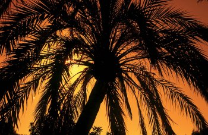
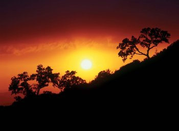

怎麼拍出剪影效果？
背光攝影需要某種形式的光影才能呈現畫面的氣氛。為了讓景物成為剪影, 你得朝明亮的地方拍攝, 並控制好曝光, 好讓前景成為黑影。當主體減暗到只剩下輪廓, 攝影者便可安排這些單純的圖形進入構圖中。這種拍法可以讓平凡的景物轉化為強烈的視覺效果。
利用補光強化細節
若你希望景物有較多的細節, 用反光板或閃光燈補光就可以達到不錯的效果。這種拍法跟拍剪影一樣, 不同之處在於剪影是黑的, 這裡我們要的是把主體的細節用補光呈現出來。不過補光再怎麼補, 畢竟還是有它的極限, 一大片的風景是不可能用隻閃燈就補得起來。若是主體近些, 反光板對一般攝影人來說算是實用簡單的工具, 眼睛可以事先看到打上去的效果。但是閃燈不同, 攝影者必須熟悉閃燈效果才能駕馭它, 而且拍出來的效果也沒有反光板自然。
拍剪影, 相對來說就很簡單。大部分的相機通常會因為錯誤的測光而創造出漂亮的剪影效果。當景物太過明亮的時候, 測光表就會被騙, 導致畫面曝光不足, 但那正是我們所想要的效果。到底要曝光不足多少, 端視你的主體而定。例如建築物或是樹木這一類的題材, 即使完全的黑掉, 也可以顯示出有利的輪廓, 但其他像花朵這一類的東西, 可能就需要包圍式曝光來找出最好的效果。其他像日落的風景照, 就必須推翻上述的曝光法則, 來使畫面達到理想的效果。
避免耀光
另一項潛在的問題就是鏡頭的耀光。耀光之所以會形成, 是由於光線在鏡頭內部折射所產生。因此在拍照的同時, 我們可以技巧性的利用景物擋住太陽, 以避免任何耀光的可能。例如在拍一棵背光的樹時, 我們可以用一根樹枝, 就輕易的遮擋陽光。耀光跟星狀光芒有些微的不同, 星狀光芒會在光源明亮之處, 會形成放射狀的光點, 只要把光圈縮一下, 就能夠達到這種效果。例如上面我們講到把太陽藏在樹枝的後面, 這種時候你可以稍稍移動相機, 只讓太陽露出一小部分出來, 這樣就能夠讓太陽光轉變成星狀光芒。
某些情況下, 耀光的效果也可以為作品加分, 在 PhotoShop 就有類似的耀光濾鏡 (Lens Flare) 可以使用。嚴重的耀光當然很難用電腦消除掉, 但是輕微的耀光可以很容易的用『仿製印章工具』 (Clone Stamp Tool) 消除掉。
為了讓天空與地面曝光能夠平衡, 在拍攝時加了漸層減光濾鏡, 讓地面上的村莊依然有所層次, 天空的曝光也恰到好處。要是沒有漸層減光鏡, 地面只會是一片死黑而已。
這張照片就是很經典的剪影, 你可以看到明亮的背景如何讓橋墩完全的變成黑色。測光的時候只要測向天空, 就可以製造出這種效果。
如果在畫面中直接把太陽納入構圖, 試著把太陽用前景遮掉一些, 以避免鏡頭耀光的產生。這張照片我把太陽置於棕櫚樹的後方, 相機的自動測光會自然而然的讓畫面曝光不足, 製造出這種剪影效果。
這一張照片是我在西班牙拍攝的一系列日落中的其中一張。太陽其實有一部分是隱藏在雲層的後端, 所以在畫面中並沒有造成太大的耀光。我測光的時候, 也只是測旁邊的天空, 以免太陽的強光會導致畫面曝光不足。